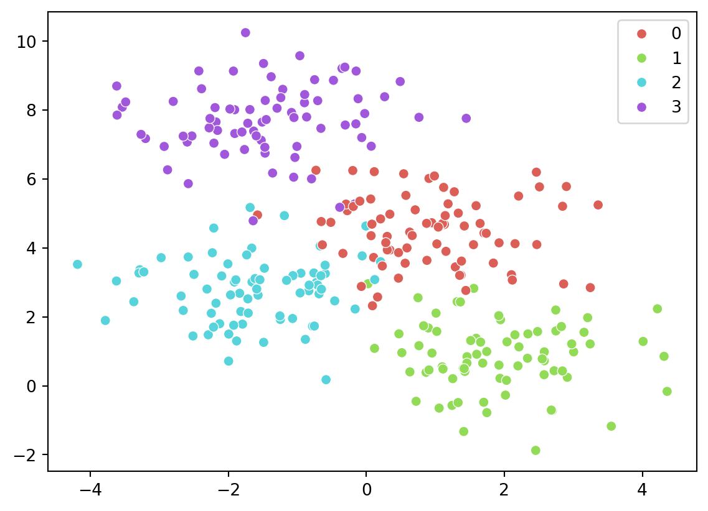
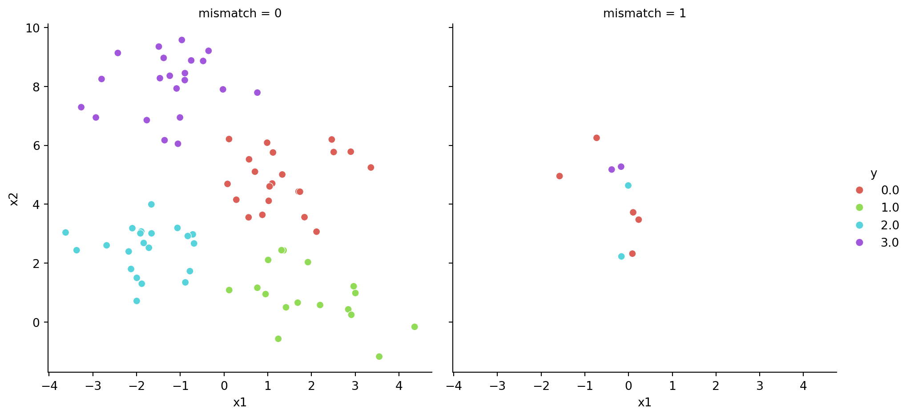

for name, model in classifiers.items():print(name)print(model)
Run the classifiers
Want to run the classifiers together: set up the result dictionary to hold the outputs of potentially different structures. Remember to save them into the right name!
results = {}# name extracts the key (can be x, i, whatever)# model refers to the contentfor name, model in classifiers.items(): model.fit(Xtrain, y_train) yhat = model.predict(Xtest) accuracy = accuracy_score(y_test, yhat)# save results. it has to be saved in the proper name results[name] = {'model': name,'accuracy': accuracy,'coefficients': model.coef_,'intercept': model.intercept_,'yhat': yhat }
Investigate results
Say that the results look like the following format.
import numpy as npimport pandas as pdmodel1 = {'accuracy': 0.95,'yhat': np.array([1,3,5])}model2 = {'accuracy': 0.97,'yhat': np.array([1,4,6])}# put them together. remember dictionary must have a key, can not simply do {model1, model2}!results = {'model1': model1,'model2': model2}results
Here we need to use list comprehension and dictionary comprehension. Recall that with LC, the syntax goes like [<expression> for <item> in <iterable>].
Combine with dictionary syntax (the expression), to get model_x['accuracy'] for both models:
# certain item only[x['accuracy'] for x in results.values()]
[0.95, 0.97]
This can also be presented as a dataframe too.
accuracy = pd.DataFrame([x['accuracy'] for x in results.values()])accuracy # can do accuracy.T to change the layout
0
0
0.95
1
0.97
Can do it to arrays too.
[x['yhat'] for x in results.values()]
[array([1, 3, 5]), array([1, 4, 6])]
Changing names for the result dataframe
Do it with df.rename(columns = {'old':'new'})
accuracy.rename(columns = {0:'accuracies'})
accuracies
0
0.95
1
0.97
Dictionary comprehension
Dictionary comprehension is similar to LC, and it’s more handy when keys are involved for later. Note that here we are extracting from results.items() rather than values().
{key: {'accuracy': value['accuracy']} for key, value in results.items()}
The results here can be put directly into a dataframe.
a = {key: {'accuracy': value['accuracy']} for key, value in results.items()}pd.DataFrame(a)
model1
model2
accuracy
0.95
0.97
yhats = pd.DataFrame({key: {'yhat': value['yhat']} for key, value in results.items()})yhats
model1
model2
yhat
[1, 3, 5]
[1, 4, 6]
Visualize results
import matplotlib.pyplot as pltimport seaborn as snsfrom sklearn.datasets import make_blobs# from code_py.sklearn_1 import XtrainX, y = make_blobs(n_samples=300, centers=4, random_state=0, cluster_std=1)# plot the two dimensions of X; color with the class in ysns.scatterplot(x = X[:,0], y = X[:,1], hue=y, palette=sns.color_palette("hls", 4))plt.show();

Decision tree example
# split the datafrom sklearn.model_selection import train_test_splitXtrain, Xtest, ytrain, ytest = train_test_split(X, y, test_size=0.3,random_state=42)# fit a decision treefrom sklearn.tree import DecisionTreeClassifiertree = DecisionTreeClassifier().fit(Xtrain, ytrain)# make predictionytest_pred = tree.predict(Xtest)ytest_pred[0:5]
array([2, 0, 0, 3, 1])
Now we try to visualise the results. First put the predictions along with the original data, and then add a label for whether there is a mismatch.
# tt = pd.DataFrame(Xtest, columns=['x1', 'x2'])# tt['new'] = ytestmat = np.column_stack((Xtest, ytest, ytest_pred))test_df = pd.DataFrame(mat, columns=['x1', 'x2', 'y', 'pred'])# add a new column where y and pred do not matchtest_df['mismatch'] = np.where(test_df['y'] != test_df['pred'], 1, 0)test_df.head()
x1
x2
y
pred
mismatch
0
-1.993750
1.500976
2.0
2.0
0
1
1.840706
3.561622
0.0
0.0
0
2
-0.170058
5.276275
3.0
0.0
1
3
-0.352996
9.210424
3.0
3.0
0
4
0.118988
1.086442
1.0
1.0
0
Now visualize
# visualize based on mismatch statussns.relplot(data = test_df, x ='x1', y ='x2', col ='mismatch', hue ='y', palette=sns.color_palette("hls", 4))plt.show();

Another way to visualize
sns.scatterplot(data = test_df, x ='x1', y ='x2', hue ='y', style ='mismatch', palette=sns.color_palette("hls", 4))plt.show();